Soru 1Cevap: A
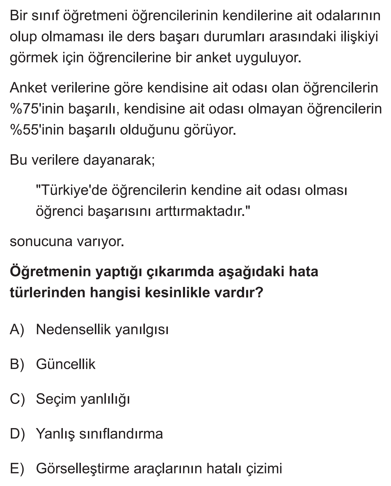
Çözüm
- Veriler oda sahibi olma ile başarı arasında bir ilişki gösteriyor.
- Öğretmen bu ilişkiden "oda başarıyı artırır" diye neden–sonuç çıkarmıştır.
- Kesinlikle bulunan hata: nedensellik yanılgısı → A.
Cevap: A
Soru 2Cevap: B
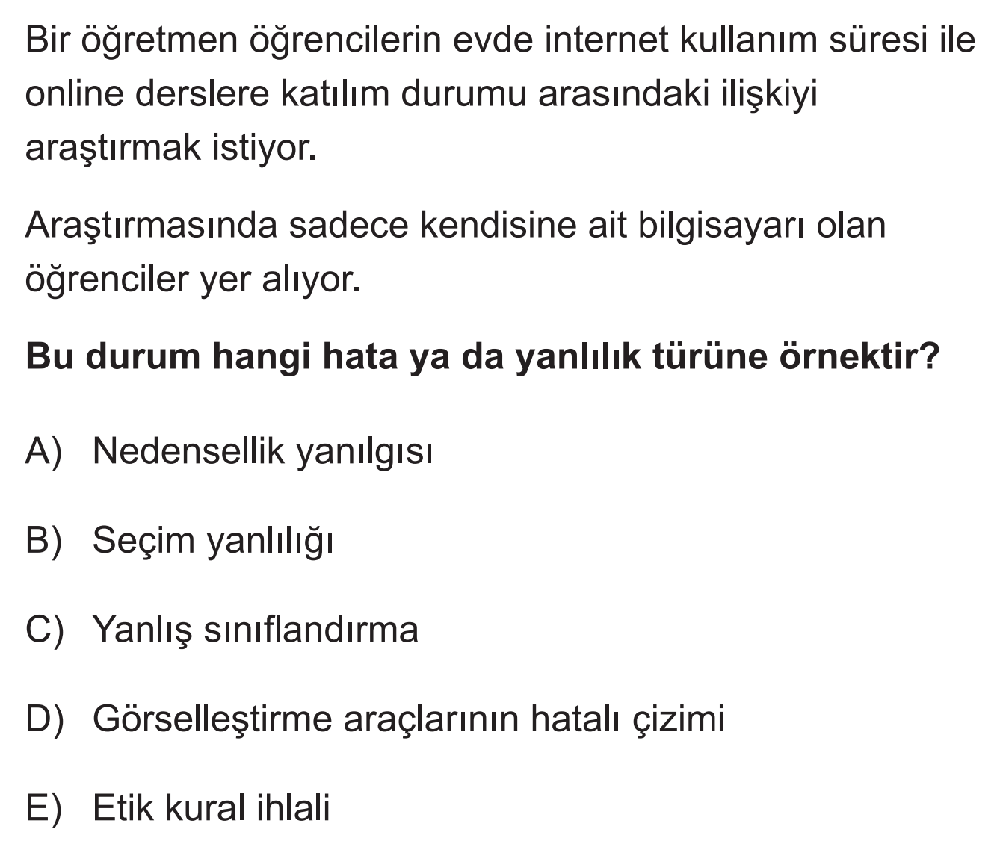
Çözüm
- Araştırma internet kullanımı ile online derslere katılımı inceliyor.
- Örneklem yalnızca bilgisayarı olan öğrencilerden seçilmiş; bilgisayarı olmayanlar dışarıda kalmış.
- Belirli bir grubun dışlanması → seçim yanlılığı (B).
Cevap: B
Soru 3Cevap: C
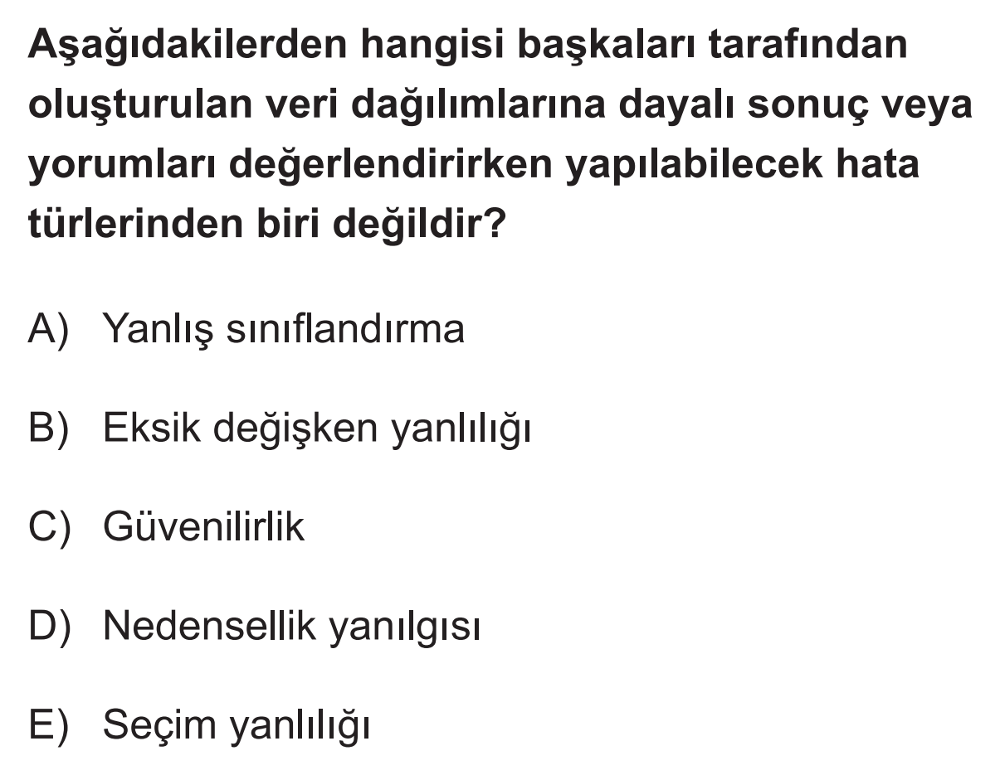
Çözüm
- Hata/yanlılık türleri: seçim yanlılığı, yanlış sınıflandırma, görselleştirme hatası, nedensellik yanılgısı, eksik değişken, küçük örneklem.
- Güvenilirlik bir hata türü değil, dijital veri kaynaklarında aranan bir özelliktir.
- Cevap C.
Cevap: C
Soru 4Cevap: D
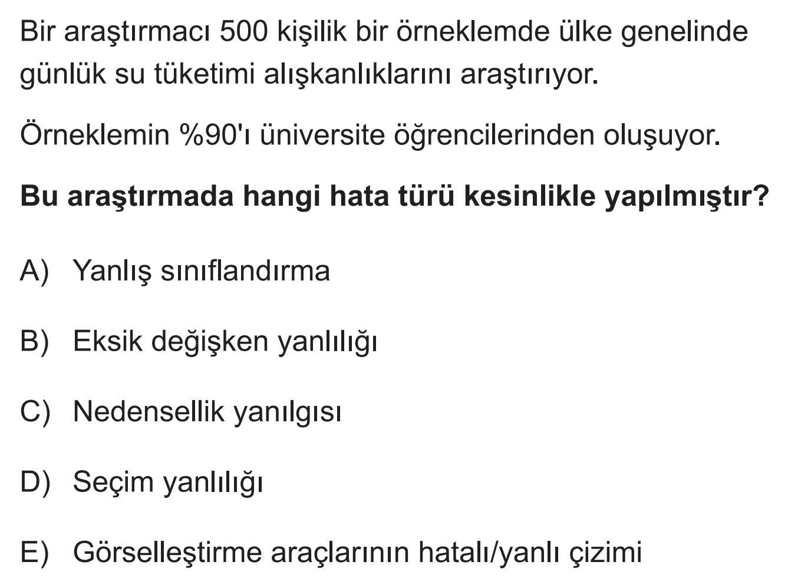
Çözüm
- Ülke genelindeki alışkanlıklar araştırılıyor.
- Örneklemin %90'ı üniversite öğrencisi; ülke nüfusunu temsil etmiyor.
- Örneklemin taraflı oluşması → seçim yanlılığı (D).
Cevap: D
Soru 5Cevap: A
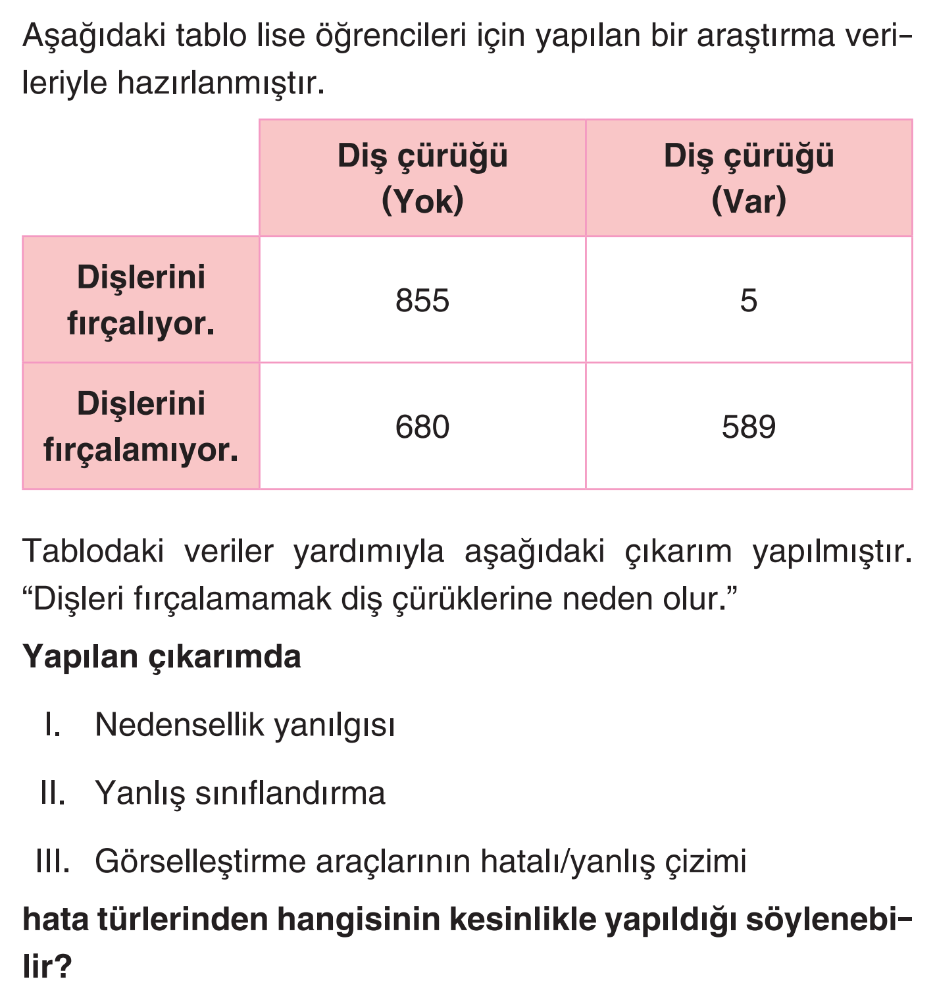
A)Yalnız IB)Yalnız IIC)Yalnız IIID)I ve IIE)I ve III
Çözüm
- Tablo diş fırçalama ile diş çürüğü arasında bir ilişki gösteriyor.
- "Neden olur" ifadesi ilişkiyi neden–sonuç ilişkisine dönüştürüyor; çürüğü etkileyen başka etkenler de vardır.
- Sınıflandırma ve grafik hatası yoktur. Kesin hata: nedensellik yanılgısı → Yalnız I.
Cevap: A
Soru 6Cevap: E
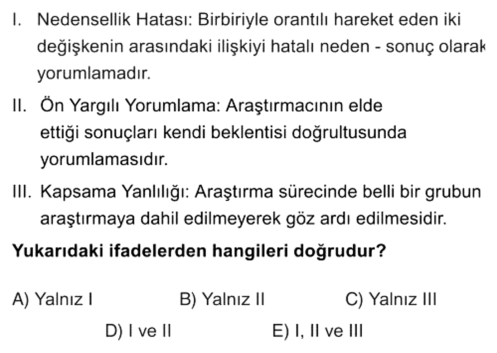
Çözüm
- Nedensellik hatası: birlikte değişen iki değişkeni neden–sonuç sanmak (I doğru).
- Ön yargılı yorumlama: sonuçları beklentiye göre yorumlamak (II doğru).
- Kapsama yanlılığı: belli bir grubun araştırmaya alınmaması (III doğru). Cevap E.
Cevap: E
Soru 7Cevap: D
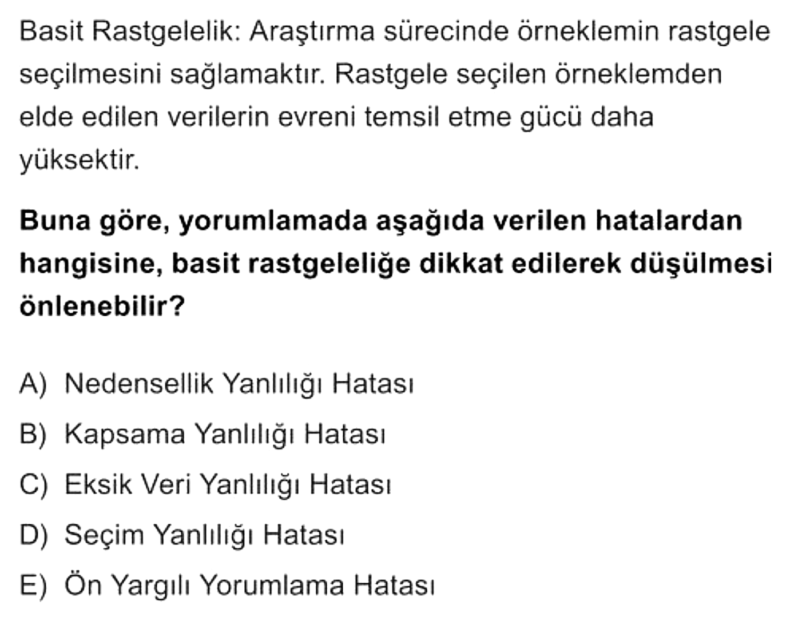
Çözüm
- Basit rastgelelikte her bireyin örnekleme girme şansı eşittir.
- Böylece örneklem belli bir gruba kaymaz, evreni temsil eder.
- Önlenen hata: seçim yanlılığı → D.
Cevap: D
Soru 8Cevap: E
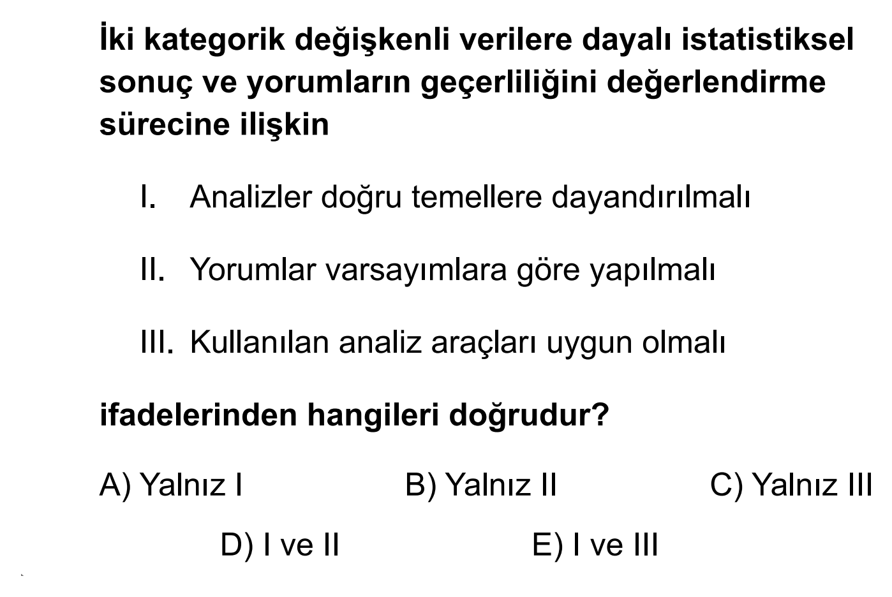
Çözüm
- Geçerlilik değerlendirmesinde analizlerin doğru temellere dayanması gerekir (I doğru).
- Kullanılan analiz araçları uygun olmalıdır (III doğru).
- Yorumlar varsayımlara değil verilere dayanmalıdır (II yanlış). Cevap: I ve III.
Cevap: E
Soru 9Cevap: A
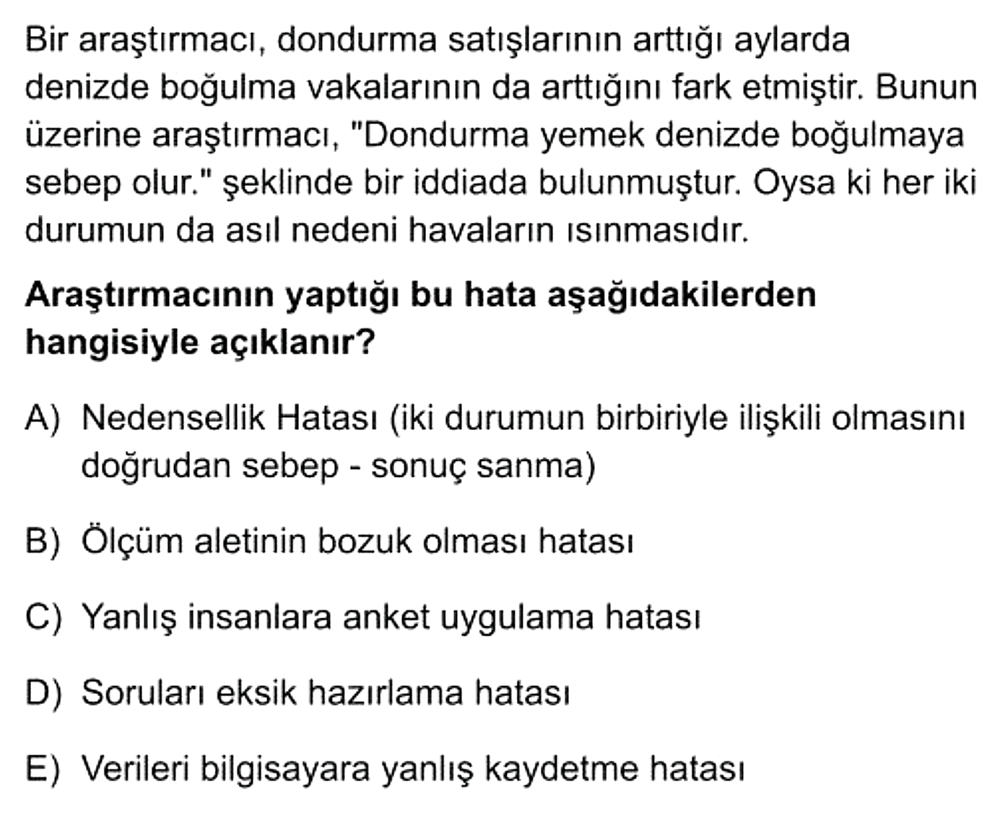
Çözüm
- Dondurma satışları ile boğulmalar birlikte artmıştır.
- İkisinin asıl nedeni havaların ısınmasıdır; biri diğerinin sebebi değildir.
- Araştırmacının hatası nedensellik hatasıdır → A.
Cevap: A
Soru 10Cevap: A
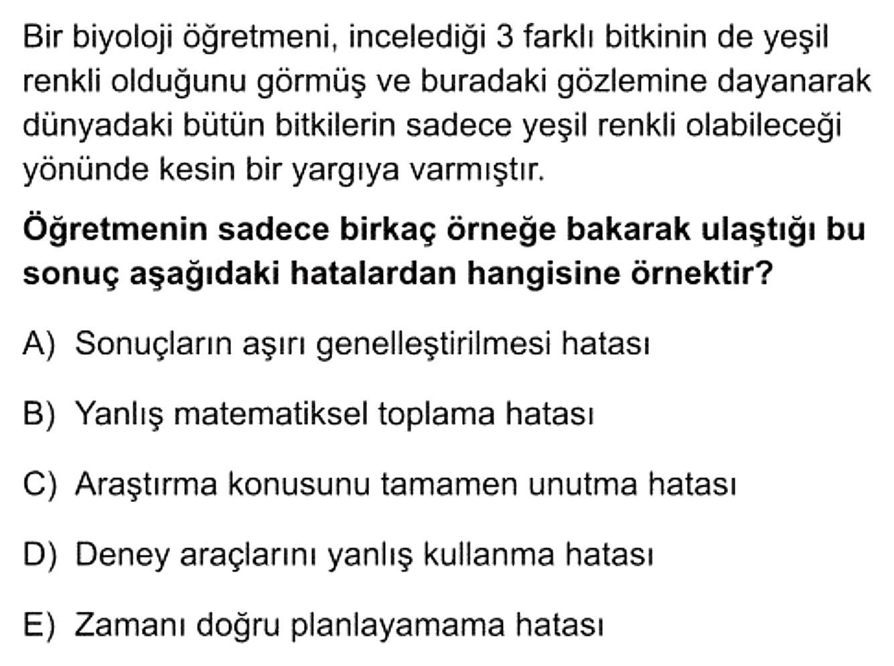
Çözüm
- Öğretmen yalnızca 3 bitkiyi incelemiştir.
- Bu az sayıda örnekten dünyadaki tüm bitkiler için kesin yargıya varmıştır.
- Hata: sonuçların aşırı genelleştirilmesi → A.
Cevap: A
Soru 11Cevap: C
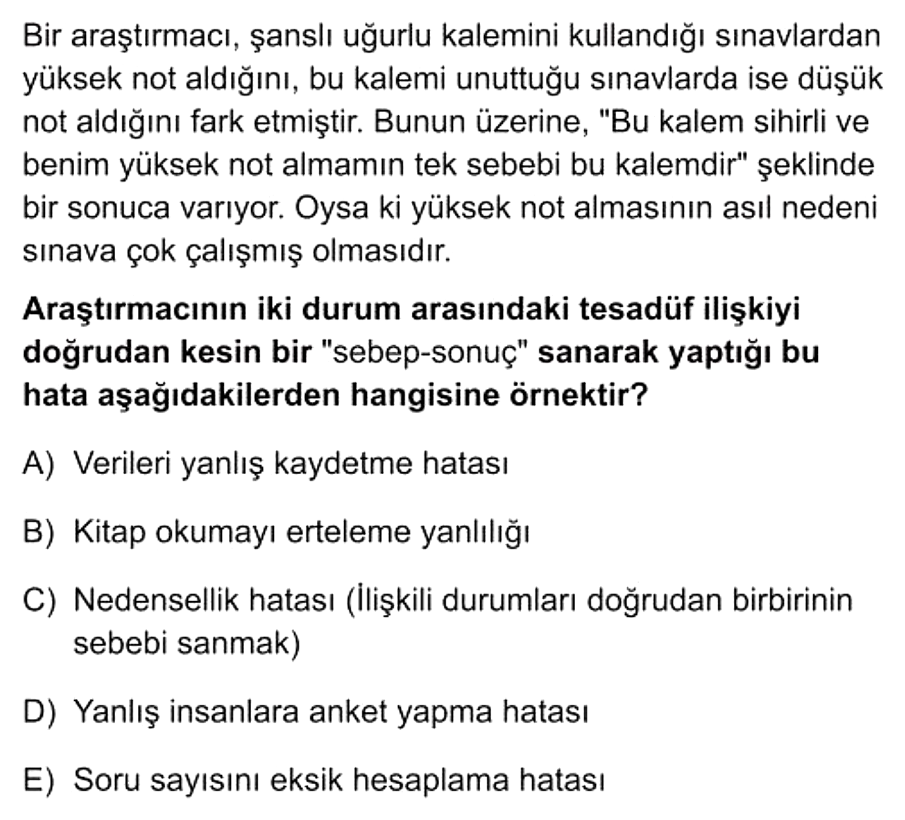
Çözüm
- Yüksek notun asıl nedeni çok çalışmaktır.
- Araştırmacı kalem ile not arasındaki tesadüfi ilişkiyi neden–sonuç sanmıştır.
- Bu nedensellik hatasıdır → C.
Cevap: C
Soru 12Cevap: B
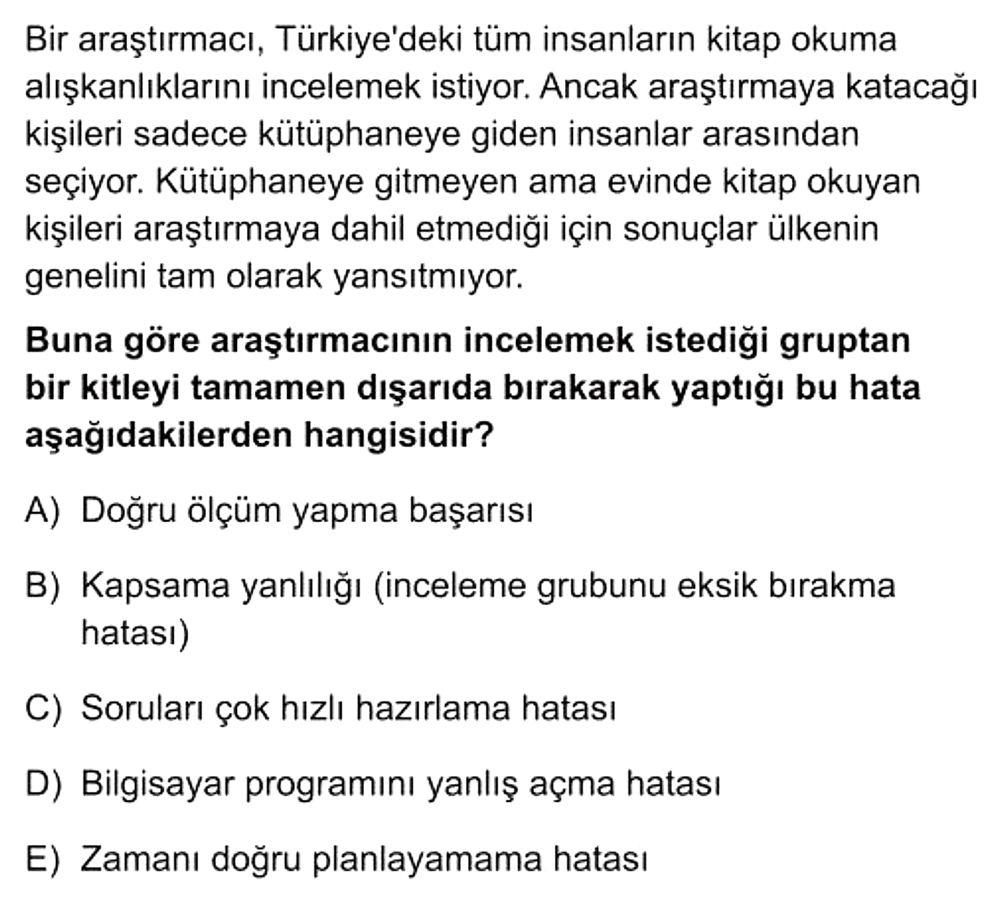
Çözüm
- Araştırma Türkiye'deki tüm insanları kapsamalıdır.
- Kütüphaneye gitmeyen ama evde kitap okuyanlar araştırmaya hiç alınmamıştır.
- Belli bir kitlenin dışarıda bırakılması kapsama yanlılığıdır → B.
Cevap: B
Soru 13Cevap: C
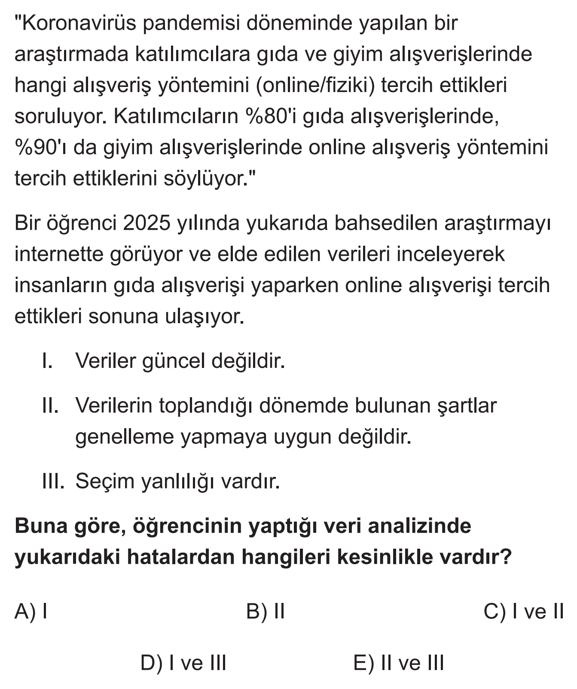
Çözüm
- Veriler pandemi dönemine aittir; 2025'te kullanıldığında güncel değildir (I).
- Pandemi koşulları olağan dışıdır; bu döneme ait sonuç bugüne genellenemez (II).
- Örneklemin nasıl seçildiğine dair bilgi yok; seçim yanlılığı kesin değildir. Cevap: I ve II.
Cevap: C
Soru 14Cevap: E
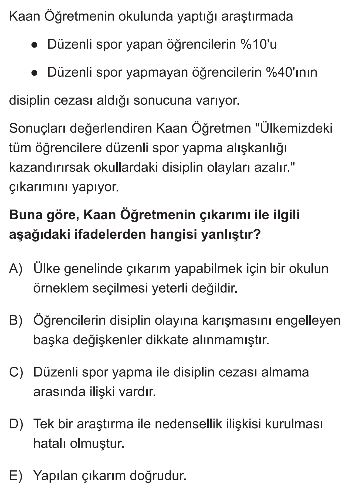
Çözüm
- Tek okuldan alınan örneklemle ülke geneline genelleme yapılamaz (A doğru).
- Disiplini etkileyen diğer değişkenler göz ardı edilmiş; ilişki nedensellik gibi yorumlanmış (B, C, D doğru).
- Bu yüzden "çıkarım doğrudur" ifadesi yanlıştır → E.
Cevap: E
Soru 15Cevap: D
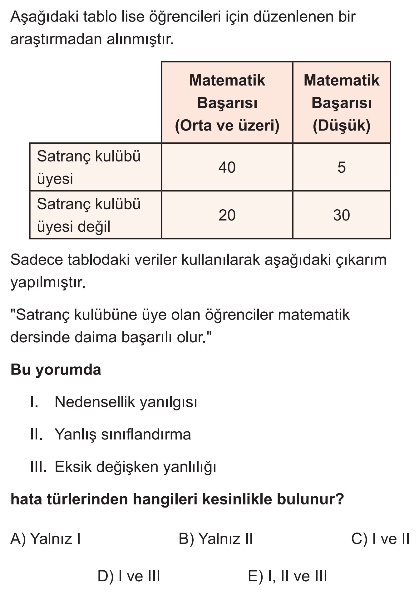
Çözüm
- Tabloda satranç kulübü üyeleriyle başarı arasında bir ilişki görülüyor; üyelerden 5'i başarısız.
- "Daima başarılı olur" demek ilişkiyi neden–sonuç gibi yorumlamaktır (nedensellik yanılgısı).
- Başarıyı etkileyen başka değişkenler de dikkate alınmamıştır (eksik değişken). Cevap: I ve III.
Cevap: D
Soru 16Cevap: E
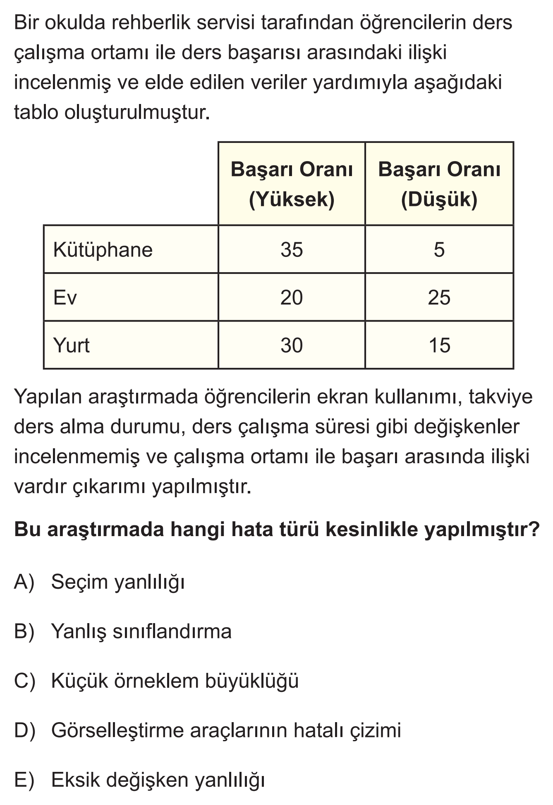
Çözüm
- Başarıyı etkileyebilecek ekran kullanımı, takviye ders, çalışma süresi gibi değişkenler incelenmemiştir.
- Buna rağmen yalnız çalışma ortamı ile başarı arasında sonuç çıkarılmıştır.
- Bu hata eksik değişken yanlılığıdır → E.
Cevap: E
Soru 17Cevap: C
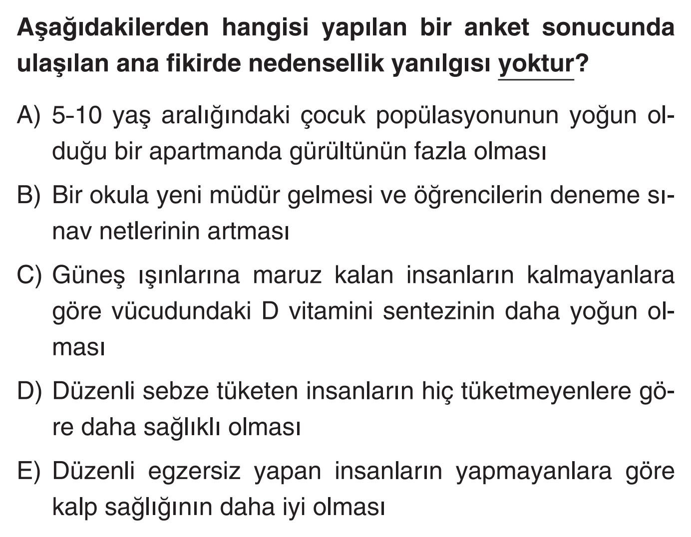
Çözüm
- Nedensellik yanılgısı, iki durumun birlikte görülmesini neden–sonuç sanmaktır.
- A, B, D ve E'de ilişki başka etkenlerle de açıklanabilir.
- Güneş ışığının D vitamini sentezini artırması bilimsel olarak kanıtlanmış bir nedenselliktir → yanılgı yoktur (C).
Cevap: C
Soru 18Cevap: B
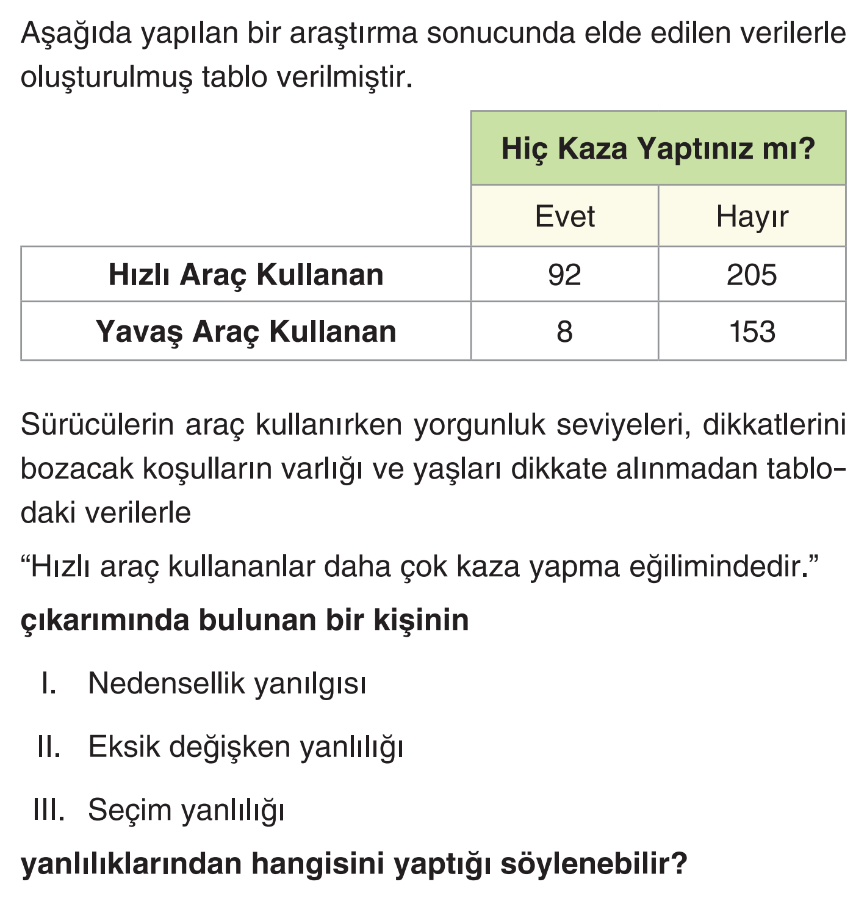
A)Yalnız IB)Yalnız IIC)Yalnız IIID)I ve IIE)II ve III
Çözüm
- Çıkarım "eğilimindedir" der; neden–sonuç kurmaz, örneklem seçimi hakkında bilgi yoktur.
- Ancak yorgunluk, dikkat ve yaş gibi kazayı etkileyen değişkenler dikkate alınmamıştır.
- Yapılan yanlılık: eksik değişken → Yalnız II.
Cevap: B
Soru 19Cevap: C
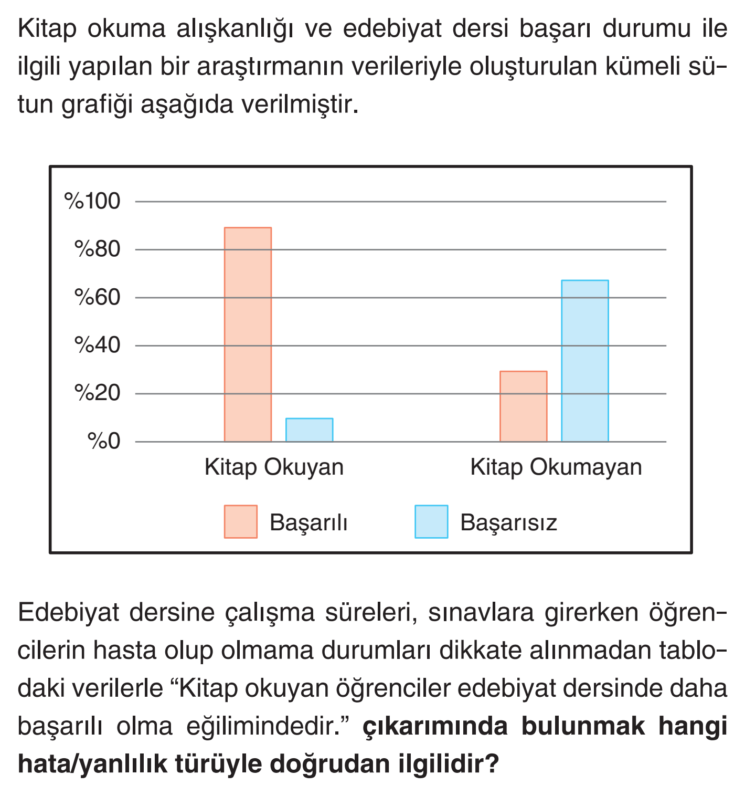
A)Seçim yanlılığıB)Yanlış sınıflandırmaC)Eksik değişken yanlılığıD)Görselleştirme araçlarının hatalı/yanlı çizimiE)Küçük örneklem büyüklüğü
Çözüm
- Grafikte kitap okuyanların çoğu başarılı görünüyor.
- Çalışma süresi, sınav günü hasta olma gibi başarıyı etkileyen değişkenler dikkate alınmamıştır.
- Bu durum eksik değişken yanlılığıdır → C.
Cevap: C
Soru 20Cevap: C
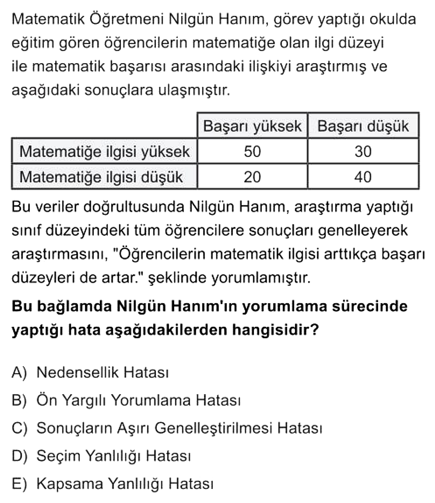
Çözüm
- İlgisi yüksek olanların 30'u, ilgisi düşük olanların 20'si tabloya uymayan sonuç vermiştir.
- Nilgün Hanım tek okuldaki verileri sınıf düzeyindeki tüm öğrencilere genellemiştir.
- Yaptığı hata: sonuçların aşırı genelleştirilmesi → C.
Cevap: C
Soru 21Cevap: D
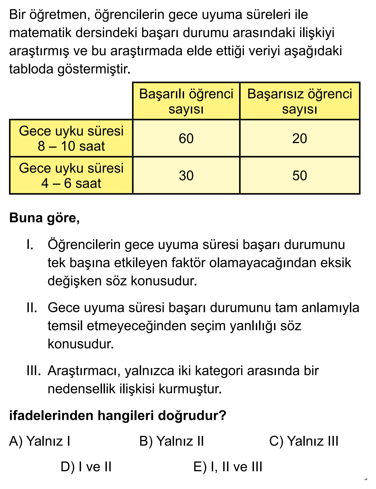
Çözüm
- Başarıyı yalnız uyku süresi belirlemez; diğer etkenler yok sayılmıştır → eksik değişken (I doğru).
- Örneklemin taraflı seçildiğine dair bilgi yoktur (II yanlış).
- Araştırmacı iki kategori arasında neden–sonuç kurmuştur (III doğru). Cevap: I ve III.
Cevap: D
Soru 22Cevap: C
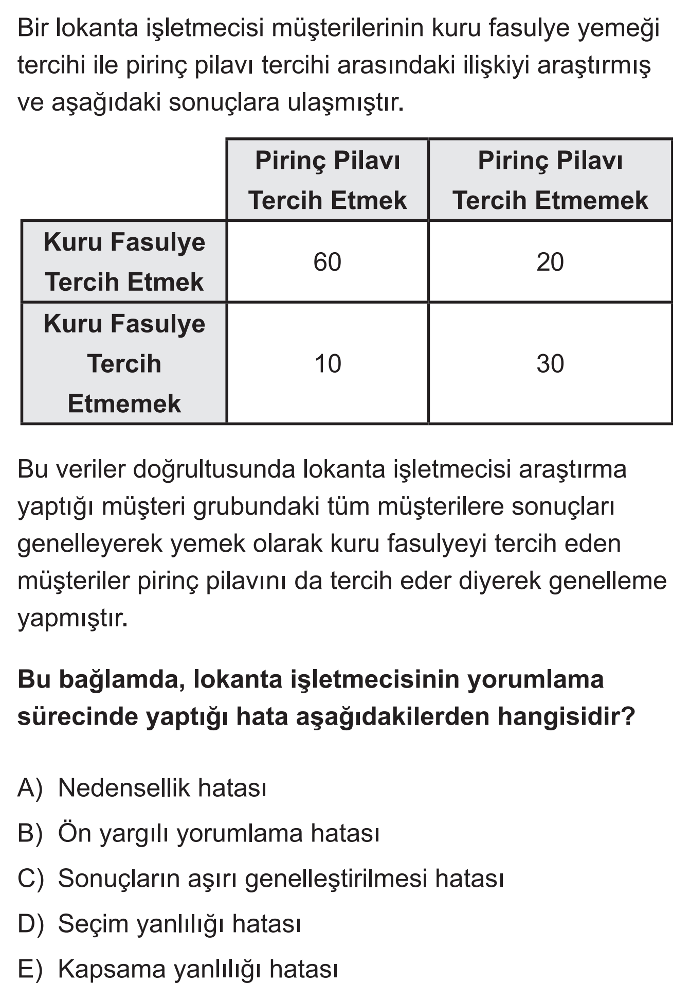
Çözüm
- Kuru fasulye tercih eden 80 kişiden 20'si pilav tercih etmemiştir.
- İşletmeci sonucu tüm müşterilere "kuru fasulye seven pilav da sever" diye genellemiştir.
- Hata: sonuçların aşırı genelleştirilmesi → C.
Cevap: C
Soru 23Cevap: E
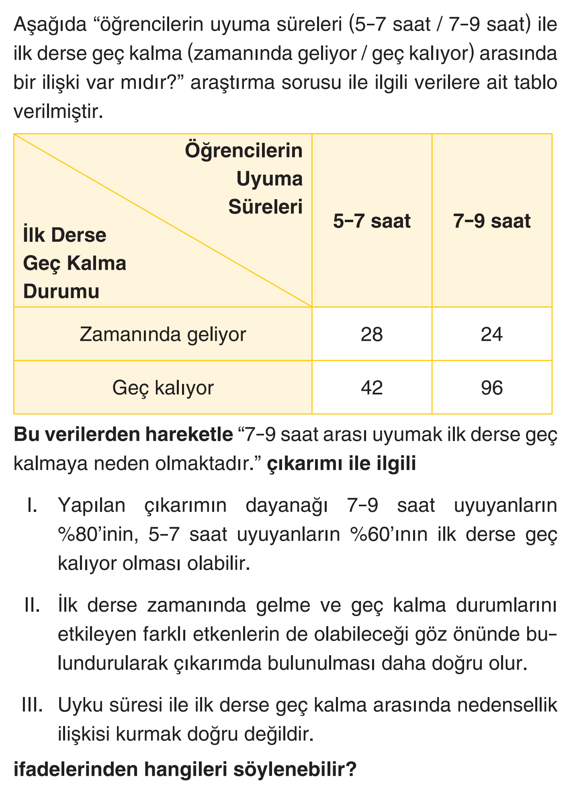
A)Yalnız IB)I ve IIC)I ve IIID)II ve IIIE)I, II ve III
Çözüm
- 7–9 saat uyuyanlarda geç kalma 96/120 = %80, 5–7 saat uyuyanlarda 42/70 = %60 → çıkarımın dayanağı budur (I).
- Geç kalmayı etkileyen başka etkenler de düşünülmelidir (II).
- Tek bir tablodan uyku süresi ile geç kalma arasında nedensellik kurulamaz (III). Cevap E.
Cevap: E
Soru 24Cevap: E
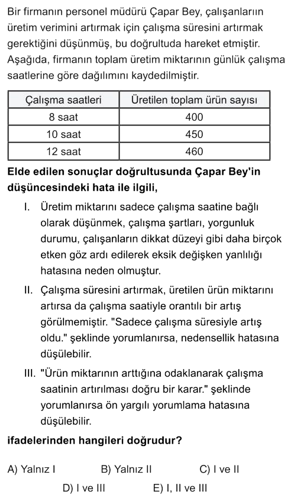
Çözüm
- Üretimi yorgunluk, çalışma şartları, dikkat gibi etkenler de etkiler; bunları yok saymak eksik değişken yanlılığıdır (I).
- Çalışma 8→12 saate çıkınca üretim 400→460 artmış, orantılı değil; artışı yalnız süreye bağlamak nedensellik hatasıdır (II).
- Beklentiye uygun sonuca odaklanmak ön yargılı yorumlamadır (III). Cevap E.
Cevap: E